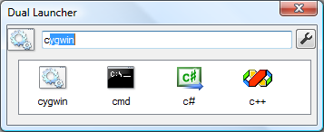
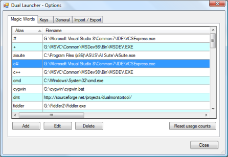
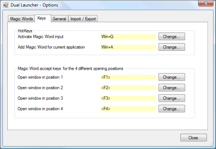
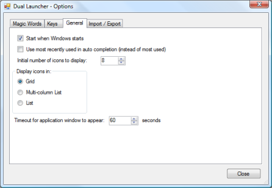
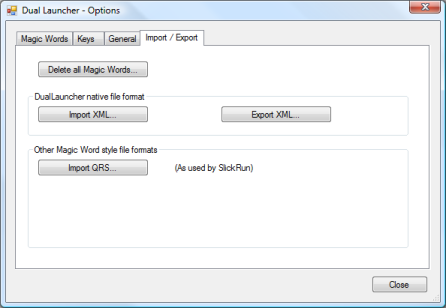
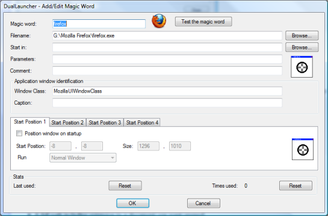

Dual Launcher
Dual Launcher
Dual Launcher allows you to launch your favourite applications with a few key strokes and to position them at pre-configured positions on any of your monitors.
Dual Launcher works by allowing you to associate a 'magic word' with each application you want to be easily able to start. You can also specify up to 4 different starting locations for the main window associated with the application
When you want to launch a particular application, you first press the Dual Launcher hotkey and then start typing in the 'magic word' for that application. Dual Launcher will try and guess the 'magic word' you are typing so you won't normally have to type it all in. When the correct 'magic word' is displayed, you can press Return or one of the configurable action keys to open it up at a pre-configured location on one of your monitors.
Usage
When DualLauncher.exe is run it will put itself into the notification area of the taskbar.
Right clicking on the Dual Launcher icon in the notification area will bring up its context menu where you can click on the 'Options' menu item.
The 'Options' dialog allows you to manage your 'magic words' and set other options.
'Magic Word' Entry
If you press the Dual Launcher hotkey which by default is Win+Q but can be changed in the options, then the 'Magic Word' entry form is displayed.
Initially this displays icons for the 8 'magic words' that you have used the most, although this is configurable. As you start typing your 'magic word', only the icons for the 'magic words' that start with the same letters that you have typed are displayed. Also the edit box highlights the rest of the word that it thinks you are typing. You can either continue typing until it displays the 'magic word' you want or you can use the up and down arrow keys or you can click on the corresponding icon with the mouse.
When ready, just press return on one of the action keys to open the application at the desired location.
'Magic Words' tab in Options
This shows the 'magic words' that are currently defined.
'Keys' tab in Options
This allows you to define the hotkey to being up the 'magic word' entry form.
You can also define a hotkey which will allow you to add a 'magic word' for the current application.
For each 'magic word' you add yo can specify 4 different positions to display the window. To use any of these 4 positions you press the corresponding accept key that is defined in this form.
Note: the Return/Enter keys always opens the window in the position 1
'General' tab in Options
'Import / Export' tab in Options
The buttons allow you to save/load the 'magic words' to/from a file.
Add/Edit Magic Word
To edit an existing 'magic word', you can double click on the 'magic word' in the main tab of the options, or use the 'Edit' button.
To add a new 'magic word', you can:
- Use the context menu.
- Use the 'Add' button on the main options tab.
- Press the hotkey for adding the current application which by default is Win+A.
For most applications, the only two fields that need to be filled in are 'Magic Word' and 'Filename'.
'Magic words' are not case sensitivive and may contain spaces and other punctuation characters.
'Filename' can be one of the following:
- A full path including extension to the executable to be run.
- A full path including extension to a document you want opened.
- A full path to a directory, which will get opened in Windows Explorer.
- A URL to a website, which will get opened in your default browser.
The essential details of this form will be automatically filled out for you if you use any of the following methods:
- Use the 'Add new Magic Word' hotkey when the application you want to add is the active application.
- Drag the top crosshair over the window belonging to the application you want to add.
- Drag the application/document from Windows Explorer onto the Add Magic Word form.
The bottom crosshair on the form can be used to select the position and size for any of the 4 locations by dragging the crosshair over a window that is at the desired position. Remember to check the 'Position window on startup' if you want the location to be used.
How the positioning works
When you launch an application via its 'magic word', Dual Launcher will start waiting for the applications window to open. If an application first launches a splash screen or perhaps some other dialog box first, then it is important that Dual Launcher can detect the correct window as being the main window. To do this you can specify the Window class and/or a regular expression to match against the window's caption. There is a configurable timeout (60 seconds by default) after which Dual Launcher will give up looking for the window.
Some applications go out of their way to take full control of their startup position, so Dual Launcher will not be able to position all applications.